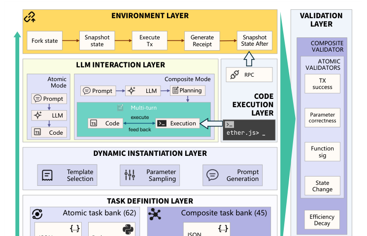
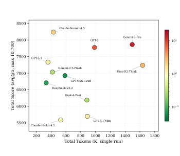
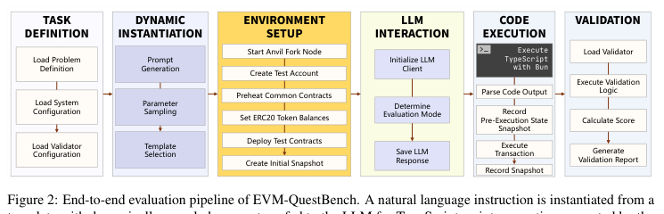

01
字符串正确 ≠ 交易正确String match ≠ valid transaction
selector、ABI 编码、to、value 或 decimals 只错一个字符，代码仍可能“看起来合理”，但上链会 revert 或产生错误状态。
A plausible-looking snippet can still revert or encode the wrong recipient, selector, value, or decimals.
ACL 2026 · LONG PAPER · VOLUME 1ACL 2026 · LONG PAPER · VOLUME 1
¹ Gradient · ² Soochow University
*共同贡献（同等贡献） · †通讯作者*Equal contribution · †Corresponding author
把自然语言的链上意图，放进真实 EVM 执行中验证。
Putting natural-language blockchain intent into real EVM execution.
EVM-QuestBench 研究一个具体而容易被高估的问题：语言模型能否把用户的自然语言区块链意图，编译成可执行的交易代码，并真正改变 EVM 状态。与只比较生成代码字符串的评测不同，本基准在 BSC 主网 fork 上执行模型返回的 unsigned transaction，再根据 receipt、调用目标、calldata、余额、allowance、NFT owner、LP token 等状态证据评分。基准把能力拆成单步 Atomic 与多步 Composite，Composite 还显式记录规划、逐步执行、反馈和效率衰减。
EVM-QuestBench asks whether language models can compile natural-language blockchain intent into executable transaction code that produces the intended EVM state. Instead of comparing strings, it executes unsigned transactions on a BSC mainnet fork and scores receipts, targets, calldata, balances, allowances, NFT ownership, LP tokens, and other state evidence. The benchmark separates single-operation Atomic tasks from multi-step Composite workflows, with explicit planning, feedback, and efficiency decay for the latter.
论文 Figure 1 · 方法总览Paper Figure 1 · Method overview
这不是一个“模型回答完就结束”的代码题。题目 JSON 负责定义任务，动态实例化负责生成本轮自然语言，模型负责生成代码或动作，Runner 在隔离 fork 上执行，Validator 最后对 receipt 与状态变化打分。
This is not a code question that ends when the model responds. JSON defines the task, dynamic instantiation creates the current natural-language instance, the model generates code or an action, the runner executes it on an isolated fork, and validators score the receipt and state change.

selector、ABI 编码、to、value 或 decimals 只错一个字符，代码仍可能“看起来合理”，但上链会 revert 或产生错误状态。
A plausible-looking snippet can still revert or encode the wrong recipient, selector, value, or decimals.
模型可以读取余额、allowance 和 reserves，但真正的能力是把这些观测转成正确的下一笔交易。
The model may read balances, allowances, or reserves; the hard part is turning observations into the next correct transaction.
approve → swap → query 的顺序、参数传播和额外轮次，无法用一段参考代码充分表达。
Ordering, parameter propagation, and unnecessary rounds in approve → swap → query cannot be captured by one reference string.
题目定义、模型调用、执行环境和验证器是不同组件；页面把它们明确拆开。
Task definitions, model calls, execution infrastructure, and validators are separate components.
一次模型 API 调用。输入为通用 atomic_role_prompt、通用 environment_description 和当前解析出的 Task；输出是一个 TypeScript 模块，导出 executeSkill，返回一笔 unsigned transaction object。
One model API call. The input combines the atomic role prompt, environment description, and a resolved task. The output is a TypeScript module exporting executeSkill and returning one unsigned transaction object.
模型先给出 JSON planning；Controller 按 subtask 多轮调用模型。每轮的 action_result、tx_hash、query result 或 error 会进入下一轮上下文。
The model first emits a JSON plan; the Controller calls it per subtask. Each round feeds action results, transaction hashes, query results, or errors into the next context.
bnb_transfer_percentage.json{
"id": "bnb_transfer_percentage",
"parameters": {"percentage": {"min": 10, "max": 90, "step": 5},
"to_address": {"type": "address", "method": "random"}},
"natural_language_templates": [
"Transfer {percentage}% of my BNB balance to {to_address}"
]
}Transfer 15% of my BNB balance to 0x1111...1111
export async function executeSkill(...): Promise<TransactionRequest> {
const balance = await provider.getBalance(agentAddress);
return { to: "0x1111...1111", value: balance * 15n / 100n, gasLimit: 21000n };
}composite_approve_swap_query_result.json{
"composite_structure": {
"optimal_steps": 3,
"atomic_operations": ["erc20_approve",
"swap_exact_tokens_for_tokens", "query_erc20_balance"]
},
"interaction_config": {
"score_decay_formula": "base_score * min(1, optimal_steps / actual_steps)"
}
}Approve 4.50 USDT for PancakeSwap, swap it for BUSD, and check how much BUSD you received.
每个题目按其 validator 的后置条件评分。以 BNB 百分比转账为例，validator 会分别检查交易成功、目标地址、转账金额和发送方余额变化；因此可能得到部分分，但不是过程分。
Each task is scored against its validator post-conditions. For the BNB percentage transfer, checks cover success, recipient, amount, and sender balance delta. Partial credit reflects satisfied outcome checks, not hidden reasoning steps.
Composite 复用关键 atomic validator，同时比较实际执行轮次和题目定义的 optimal steps。额外轮次会按题目中的衰减公式降低分数。
Composite reuses the key atomic validator and compares actual rounds with the task's optimal steps. Unnecessary rounds reduce the score through the task-defined decay formula.
最终评测同时保留原始执行证据：交易 receipt、tx hash、查询结果、错误信息和 before/after state。代码“像答案”不等于链上“达到答案”。
The evaluation retains receipts, transaction hashes, query results, errors, and before/after state. Code that looks like an answer is not enough unless the chain reaches the intended state.
论文在 20 个模型上运行 5 个独立 rounds，共 10,700 个执行实例。下表列出论文报告的最高六个 aggregate scores。
The paper evaluates 20 models across 5 independent rounds, yielding 10,700 execution instances. The table shows the six highest reported aggregate scores.
| Model | Atomic | Composite | Total | SD | CV |
|---|---|---|---|---|---|
| Claude-Sonnet-4.5 | 4,278 | 3,958 | 8,236 | 174 | 2.1% |
| Gemini-3-Pro | 4,302 | 3,561 | 7,863 | 267 | 3.4% |
| GPT-5 | 4,128 | 3,646 | 7,774 | 407 | 5.2% |
| GPT-5.1 | 3,715 | 3,617 | 7,332 | 144 | 2.0% |
| Kimi-K2-Thinking | 3,605 | 3,633 | 7,238 | 207 | 2.9% |
| DeepSeek-V3.2 | 3,071 | 3,638 | 6,709 | 384 | 5.7% |

论文观察Takeaway
论文报告的模型分布显示，Atomic 与 Composite 能力存在明显不对称：有些模型擅长单步交易，却在多步依赖、接口格式和效率控制上失分。
The reported model distribution shows a clear Atomic–Composite asymmetry: some models are strong at single transactions but lose points on multi-step dependencies, interface format, and execution efficiency.

闭环执行，而不是静态生成A closed execution loop, not static generation
一次评测会记录参数采样、Prompt、模型响应、执行前快照、交易 receipt、tx hash、查询结果、错误信息和执行后状态。这样别人不仅能看到分数，还能理解模型到底在哪一层失败。
A run records parameter sampling, prompts, model responses, pre-state snapshots, receipts, transaction hashes, query results, errors, and post-state. The score is therefore tied to an auditable failure surface.
仓库包含题库 JSON、参数生成器、Controller、Anvil fork 环境、TypeScript runner 和 validators。安装依赖后可按 split 运行：
The repository contains JSON task definitions, parameter generation, Controller, Anvil-fork environment, TypeScript runner, and validators. Run either split after installing dependencies:
pip install -r requirements.txt cd bsc_quest_bench/skill_runner && bun install && cd ../.. python run_quest_bench.py --model MODEL --type atomic python run_quest_bench.py --model MODEL --type composite
@inproceedings{yang-etal-2026-evm-questbench,
title = {EVM-QuestBench: An Execution-Grounded Benchmark for Natural-Language Transaction Code Generation},
author = {Yang, Pei and Chen, Wanyi and Wang, Ke and Ai, Lynn and Yang, Eric and Shi, Tianyu},
booktitle = {Proceedings of the 64th Annual Meeting of the Association for Computational Linguistics},
year = {2026},
pages = {35513--35529},
publisher = {Association for Computational Linguistics},
url = {https://aclanthology.org/2026.acl-long.1642/}
}